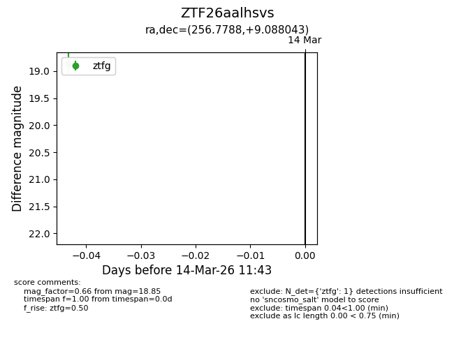
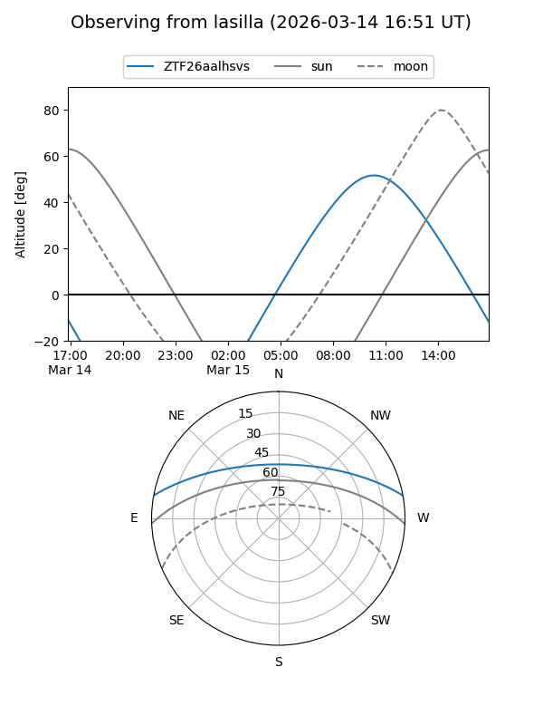
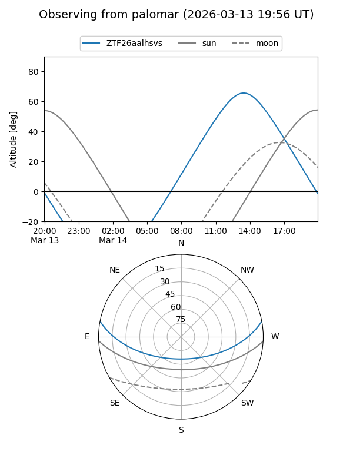

ZTF26aalhsvs
Target ZTF26aalhsvs at 2026-03-14 11:45
Aliases and brokers:
FINK: link
Lasair: link
ALeRCE: link
alt names
ZTF26aalhsvs (ztf,fink_ztf)
Coordinates:
equatorial (ra, dec) = 256.7788,+9.08804
equatorial (HMS+DMS) = 17:07:06.92,+09:05:16.95
galactic (l, b) = (29.2305,+27.28277)
Flags:
Photometry:
last ztfg=18.85
1 ztfg detections
Lightcurve

Visibility


Additional plots